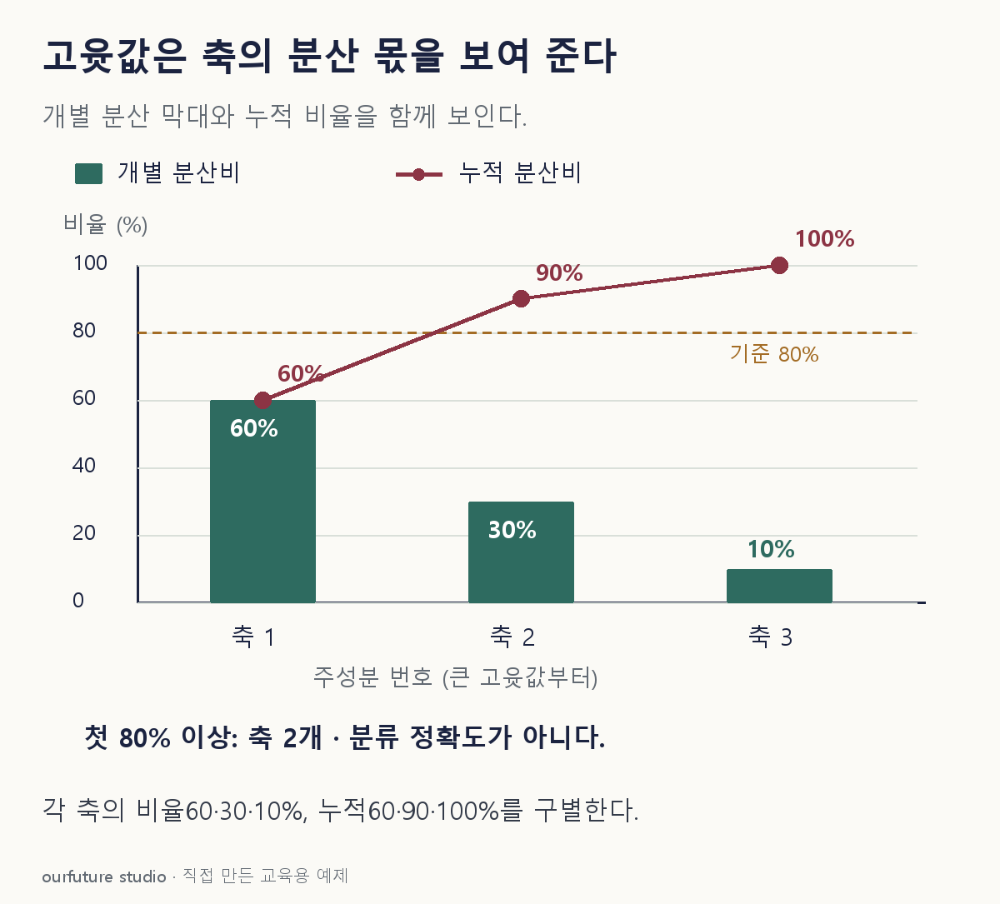

조건을 바꾸며 확인하기
고윳값6·3·1과 전처리는 고정한다. 분류성능·최적 차원 검증을 수행하지 않는다.
설명 그림과 비교하기
아래 그림과 표는 고정된 설명 예제입니다. 기본·변형 중 어떤 조건인지 캡션을 읽고, 바꾼 입력의 결과는 계산 칸에서 확인하세요.

같은 문제를 직접 골라 보기
PCA 고윳값 6·3·1. 누적 설명분산비 80% 이상을 만족하는 최소 개수를 고른다.
조건을 더 바꾸면?
누적 기준만 95% 이상으로 올리면 최소 개수는?
변형 풀이 확인
3개.
앞 두 축은 90%로 부족하고 세 축을 모두 남기면 100%다. 이 비율을 분류 정확도라고 바꾸어 말하지 않는다.
한 축은 나누고, 남길 개수는 누적한다.